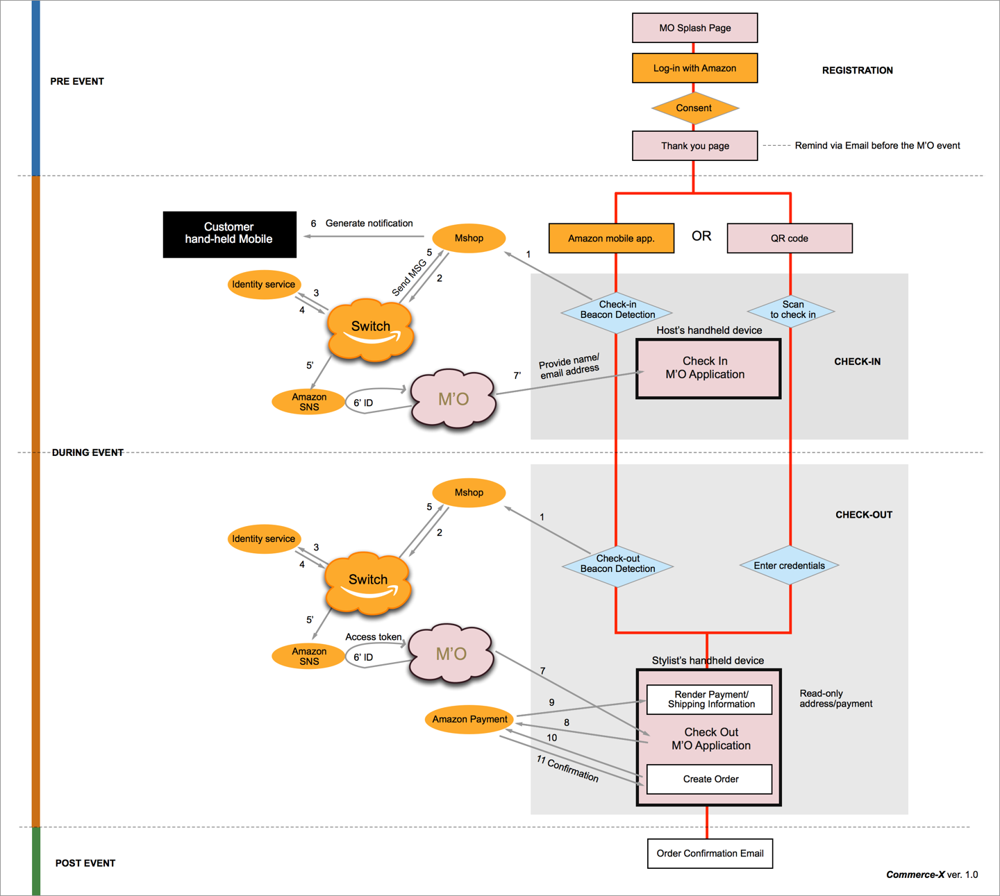
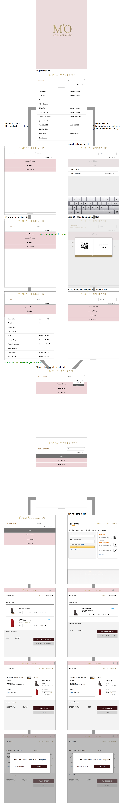

Moda Operandi
Brainstorm, wireframe, low-fidelity prototype, high-fidelity prototype, UI assets, visual design specification, implementation
November, 2015 - Current
Proposal of Moda Operandi instore event using Switch system
Moda Operandi will host an exclusive trunk show event during NY Fashion Week offering Amazon customers early access to new 2016 Fall/Winter collections of featured designers. The event will showcase the convergence of fashion and technology, where the power of a customer’s Amazon commerce identity will enable a seamless experience from start to finish. Starting with registering for the event using Login with Amazon, followed by automatic authentication and checking-in of the customer at the event (enabled by the combination of beacon technology, Amazon Shopping app, Identity services, and Switch), to finally facilitating a hands-free/frictionless buying experience at Moda's physcial retail location powered by Amazon Payments.
In Moda Operandi event flow using Switch system, I discussed with engineers and product manager about our product story and understanding system architecture. From scratch to implementation, I have fully participated in agile process. We provided these products for this instore event: overall system flow and architecture diagram, use case of registration flows on mobile, Passbook (QR) for iPhone user, Amazon shopping app notification mockup, merchant application UI to manage check in/out and user profile.
Switch system flow
I build user experience from scratch to prototype.

1. Customer experience: registration via Amazon login

2. Merchant experience: help check-in and out in store at the event
